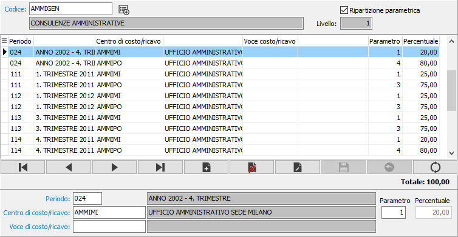
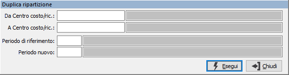

Ripartizione centri di costo/ricavo
La procedura di ripartizione centro di costo/ricavo viene utilizzata per assegnare, ai centri C/R. definiti di livello intermedio, i relativi centri di costo/ricavo associandoli a specifici periodi di ripartizione.
La ripartizione dei centri C/R. viene utilizzata sia in fase di ribaltamento, sia in fase di ripartizione per i centri definiti transitori.

Dopo aver specificato il centro di costo/ricavo, sono selezionabili solo quelli di livello intermedio (livello tra 1 e 99), vengono visualizzati il livello ed il tipo di ripartizione attuabile, parametrica o percentuale.
Si passa successivamente all'inserimento dei singoli periodi di ripartizione collegati con i relativi centri di costo/ricavo e, se previsto in configurazione, Voci di costo/ricavo da utilizzare per il ribaltamento o la ripartizione. Su tutti i campi codice sono presenti le funzioni di ricerca (F9) ed accesso interattivo alla tabella collegata (CTRL+W).
In relazione al tipo di ripartizione viene richiesta la percentuale oppure il parametro; in quest'ultimo caso la percentuale viene calcolata automaticamente.
Il pulsante Duplicazione consente di generare ripartizioni per nuovi periodi da altre già esistenti. Compare la finestra di selezione che consente di specificare i centri di costo/ricavo da selezionare, il periodo da leggere ed il nuovo periodo, su cui copiare i dati.
